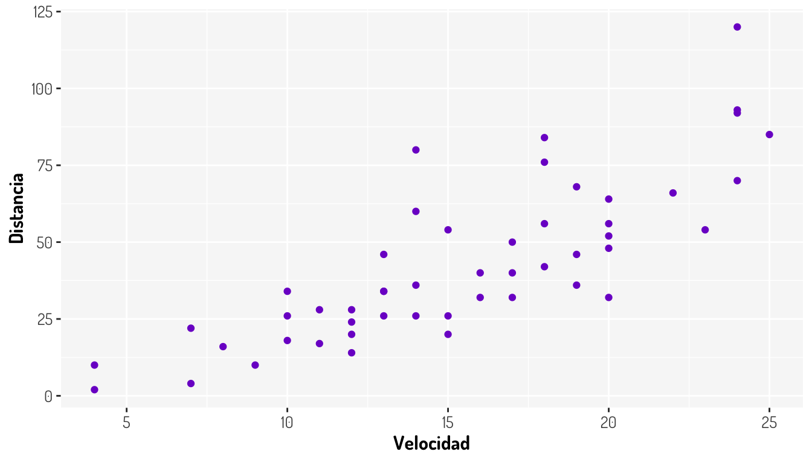
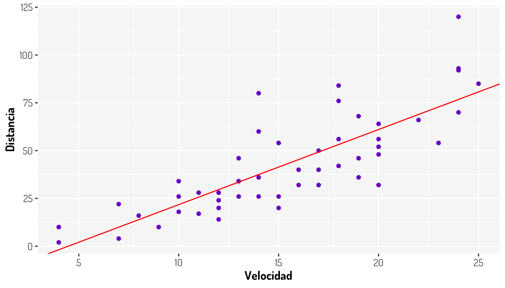
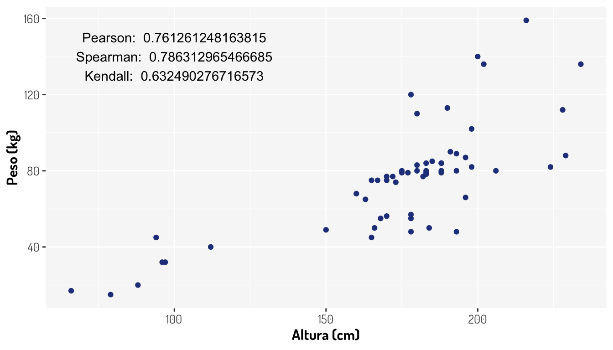
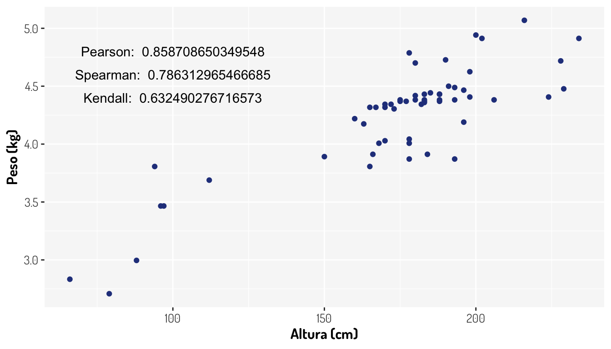
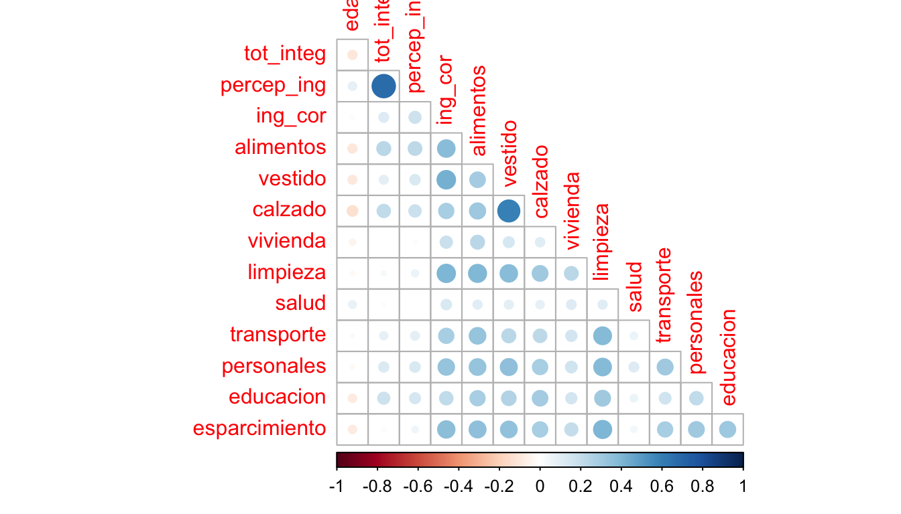
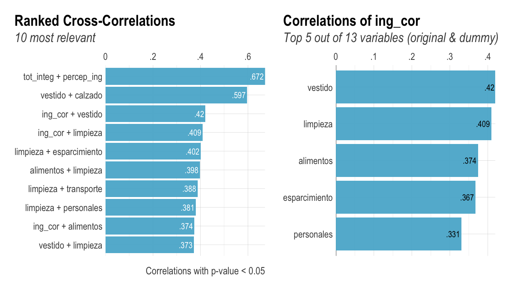
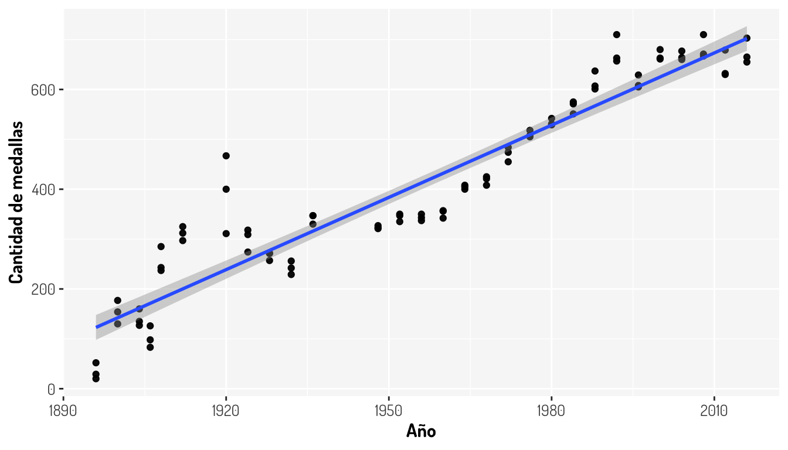

Capítulo 5 Regresión lineal simple
Nuestro objetivo en un modelo de regresión será ajustar o asociar una variable, a la que llamaremos variable respuesta o dependediente, con una o más variables distintas llamadas variables predictoras o independientes, con el fin de poder predecir valores futuros de la variable respuesta y analizar los efectos que tendría esta variable con alteraciones en el resto de variables del modelo.
En este caso, el de la regresión lineal simple consideramos dos variables (1 predictora (\(x\)) y otra como respuesta (\(y\))) y establecemos este modelo de la siguiente manera:
\[ y_{i}=\beta_{0}+\beta_{1}x_{i}+\epsilon_{i} \]
Por algunas propiedades interesantes, podemos ver que \(\mathbf{E}[y_{i}]=\beta_{0}+\beta_{1}x_{i}\) por lo que este modelo considera que la media de \(y\) cambia a razón constante mediante los cambios de \(x\). Como estamos obteniendo una recta, \(\beta_{1}\) es la pendiente de dicha recta y es lo que nos indica la importancia de \(x\) sobre \(y\) (que tan drásticos son los cambios de una sobre otra).
\(\beta_0\) nos indica el valor de \(y\) cuando la variable predictora esta ausente. \(\epsilon\) es simplemente un error aleatorio que nos dará ciertos problemas para la validación de este modelo mediante pruebas de hipótesis pero nos otorga la flexibilidad probabilística para la predicción.
Es sencillo realizar una regresión lineal en R, simplemente podemos utilizar el comando base::lm() agregando una fórmula (~) como parámetro. Por ejemplo, consideremos la base de datos datasets::cars donde se tiene la velocidad y la distancia que recorrió un coche para detenerse; estos datos fueron recolectados en 1920.
cars %>% ggplot(aes(x = speed, y = dist)) + labs(x = "Velocidad", y = "Distancia") + geom_point(colour = "purple3") + general_theme
Ahora, realizaremos nuestro modelo lineal simple:
car_regression <- lm(dist~speed, data = cars)
summary(car_regression)
Call:
lm(formula = dist ~ speed, data = cars)
Residuals:
Min 1Q Median 3Q Max
-29.069 -9.525 -2.272 9.215 43.201
Coefficients:
Estimate Std. Error t value Pr(>|t|)
(Intercept) -17.5791 6.7584 -2.601 0.0123 *
speed 3.9324 0.4155 9.464 1.49e-12 ***
---
Signif. codes: 0 '***' 0.001 '**' 0.01 '*' 0.05 '.' 0.1 ' ' 1
Residual standard error: 15.38 on 48 degrees of freedom
Multiple R-squared: 0.6511, Adjusted R-squared: 0.6438
F-statistic: 89.57 on 1 and 48 DF, p-value: 1.49e-12Véase que se nos da mucha información:
- Estadísticas sobre los residuales.
- Información sobre los coeficientes de la regresión mediante mínimos cuadrados.
- Información sobre el ajuste del modelo con los datos.
Estos puntos se verán después, algunos de ellos se verán hasta regresión lineal múltiple ya que tienen una interpretación similar, pero por el momento basta con saber que, de acuerdo a los datos obtenidos, nuestro modelo queda expresado de la siguiente manera:
\[ y_i = -17.5791 + 3.9324x_i \]
Que es lo mismo al siguiente modelo:
\[ \mbox{Distancia del auto }i = -17.5791 + 3.9324\times\mbox{Velocidad del auto }i \]
Y ahora podemos generar la siguiente gráfica
cars %>% ggplot(aes(x = speed, y = dist)) +
labs(x = "Velocidad", y = "Distancia") + general_theme +
geom_point(colour = "purple3") +
geom_abline(intercept = car_regression$coefficients[1],
slope = car_regression$coefficients[2],
colour = "red")
Hay cosas importantes que ver en este tema y aquí se comenzará con un pequeño análisis de correlación.
5.1 Correlación y linearidad
La manera más sencilla de proponer un conjunto de variables predictoras es ver la relación lineal que tienen estas con la variable respuesta. Esto lo podemos obtener mediante diferentes estadísticas, por ejemplo:
- Coeficiente de correlación de pearson: \(\rho_{xy} = r_{xy} = \frac{\sum_{i = 1}^n(x_i-\bar{x})(y_i-\bar{y})}{\sqrt{\sum_{i = 1^n}(x_i-\bar{x})^2}\sqrt{\sum_{i = 1}^n(y_i-\bar{y})^2}}\)
- Coeficiente de correlación de spearman: \(r_s = 1- \frac{6\sum d_i^2}{n(n^2-1)}\) donde \(d_i = rango(X_i)-rango(Y_i)\)
- Coeficiente de correlación de Kendall: \(\tau = \frac{(\mbox{número de pares concordantes})-(\mbox{número de pares discordantes})}{n \choose 2}\)
Cada uno de las estadísticas anteriores tiene un propósito diferente, \(\rho\) mide la relación lineal entre las variables que se están comparando, el coeficiente de correlación de spearman mide relaciones monótonas (una relación lineal lo es) y el coeficiente de Kendall mide la semejanza en el ordenamiento de los datos cuando se clasifican en rangos por cada una de las cantidades. Todas estas se pueden obtener mediante la función base::cor(x, y, method = c("pearson", "kendall", "spearman")).
Es importante no sólo considerar el primero de los coeficientes de correlación mencionados, ya que puede existir una clara relación entre las variables (como en un conjunto de puntos que dibujen una parábola) y el coeficiente tener un valor de 0. Vamos a tomar los datos dplyr::starwars donde se tienen datos descriptivos de los personajes de la saga Star Wars.
starwars# A tibble: 87 × 14
name height mass hair_color skin_color eye_color birth_year sex gender
<chr> <int> <dbl> <chr> <chr> <chr> <dbl> <chr> <chr>
1 Luke S… 172 77 blond fair blue 19 male mascu…
2 C-3PO 167 75 <NA> gold yellow 112 none mascu…
3 R2-D2 96 32 <NA> white, bl… red 33 none mascu…
4 Darth … 202 136 none white yellow 41.9 male mascu…
5 Leia O… 150 49 brown light brown 19 fema… femin…
6 Owen L… 178 120 brown, grey light blue 52 male mascu…
7 Beru W… 165 75 brown light blue 47 fema… femin…
8 R5-D4 97 32 <NA> white, red red NA none mascu…
9 Biggs … 183 84 black light brown 24 male mascu…
10 Obi-Wa… 182 77 auburn, wh… fair blue-gray 57 male mascu…
# … with 77 more rows, and 5 more variables: homeworld <chr>, species <chr>,
# films <list>, vehicles <list>, starships <list>Sólo para estos fines, eliminaremos un outlier sobre el peso y consideraremos sólo esta y la altura para ver si existe algún tipo de relación entre estas variables.
new_starwars <- starwars %>% filter(mass < max(starwars$mass, na.rm = T))
pearson_star <- cor(new_starwars$height, new_starwars$mass)
spearman_star <- cor(new_starwars$height, new_starwars$mass, method = "spearman")
kendall_star <- cor(new_starwars$height, new_starwars$mass, method = "kendall")
new_starwars %>% ggplot(aes(x = height, y = mass)) +
geom_point(color = "royalblue4") + labs(x = "Altura (cm)", y = "Peso (kg)") +
annotate("text", x = 100, y = 150, label = paste("Pearson: ", pearson_star, collapse = "")) +
annotate("text", x = 100, y = 140, label = paste("Spearman: ", spearman_star, collapse = "")) +
annotate("text", x = 100, y = 130, label = paste("Kendall: ", kendall_star, collapse = "")) +
general_theme
Como vemos, el coeficiente de correlación de pearson tiene un valor cercano al de Spearman, aunque este último nos inidica que existe una relación monótona, por lo que podríamos aplicar una transformación para otorgar un comportamiento más cercano al lineal con una función monóntona como lo es el logaritmo.
pearson_star <- cor(new_starwars$height, log(new_starwars$mass))
spearman_star <- cor(new_starwars$height, log(new_starwars$mass), method = "spearman")
kendall_star <- cor(new_starwars$height, log(new_starwars$mass), method = "kendall")
new_starwars %>% ggplot(aes(x = height, y = log(mass))) +
geom_point(color = "royalblue4") + labs(x = "Altura (cm)", y = "Peso (kg)") +
annotate("text", x = 100, y = 4.8, label = paste("Pearson: ", pearson_star, collapse = "")) +
annotate("text", x = 100, y = 4.6, label = paste("Spearman: ", spearman_star, collapse = "")) +
annotate("text", x = 100, y = 4.4, label = paste("Kendall: ", kendall_star, collapse = "")) +
general_theme
Nuestro coeficiente de correlación lineal aumente significativamente y surge la siguiente pregunta: ¿Cuándo utilizar alguna transformación y cuál? En general, cualquier función que sólo cambie la escala y este definida para los datos que se estén considerando se puede utilizar, como un logaritmo (que nos ayuda a reducir dispersión y dar valores pequeños), una raíz cuadrada, una función inversa, etc; aunque hay que tener cuidado. Por ejemplo ¿Qué pasaría con si tengo valores iguales a cero y aplico un logaritmo? ¿La interpretación sobre los coeficientes cambiaría o no? Este último punto se verá después.
- Se recomienda revisar el libro The Statistical Sleuth, tercera edición donde se muestran algunos patrones comunes que podrían impedir realizar alguna relación lineal entre variables.
Ahora, si bien es razonable pensar que la altura y el peso estén relacionados de manera lineal ¿Podemos confiar siempre en el resultado de una correlación? No, ya que una correlación no implica causalidad (una relación verdadera entre dos variables). Veamos los siguientes ejemplos del siguiente enlace:


Es difícil pensar que realmente existe una relación entre dichas variables en cada caso, así como considerar que existe una relación entre la cantidad de IPhones comprados y la cantidad de personas que mueren al caer de las escaleras o pensar que la cantidad de cigueñas esta relacionado con la cantidad de nacimientos en Europa aunque se tenga un \(r = 0.62\) y un \(p-value = 0.008\) en la prueba de hipótesis correspondiente a \(\beta_i\).
Otro punto interesante es, ¿Qué tanto podemos confiar sólo en nuestras estadísticas? Consideremos la siguiente información obtenida del paquete datasauRus.
library(datasauRus)
dino_data <- datasauRus::datasaurus_dozen %>% filter(dataset == "dino")
datasaurus_dozen %>%
group_by(dataset) %>%
summarize(
mean_x = mean(x),
mean_y = mean(y),
std_dev_x = sd(x),
std_dev_y = sd(y),
corr_x_y = cor(x, y)
)# A tibble: 13 × 6
dataset mean_x mean_y std_dev_x std_dev_y corr_x_y
<chr> <dbl> <dbl> <dbl> <dbl> <dbl>
1 away 54.3 47.8 16.8 26.9 -0.0641
2 bullseye 54.3 47.8 16.8 26.9 -0.0686
3 circle 54.3 47.8 16.8 26.9 -0.0683
4 dino 54.3 47.8 16.8 26.9 -0.0645
5 dots 54.3 47.8 16.8 26.9 -0.0603
6 h_lines 54.3 47.8 16.8 26.9 -0.0617
7 high_lines 54.3 47.8 16.8 26.9 -0.0685
8 slant_down 54.3 47.8 16.8 26.9 -0.0690
9 slant_up 54.3 47.8 16.8 26.9 -0.0686
10 star 54.3 47.8 16.8 26.9 -0.0630
11 v_lines 54.3 47.8 16.8 26.9 -0.0694
12 wide_lines 54.3 47.8 16.8 26.9 -0.0666
13 x_shape 54.3 47.8 16.8 26.9 -0.0656Como vemos, las estadísticas son bastante similares entre todos los conjuntos de datos, incluso la correlación; por lo que tal vez pensaríamos en tener datos similares; bueno veámos como se ven algunos de estos datos.
ggplot(datasaurus_dozen %>% filter(dataset %in% c("dino", "star", "h_lines")), aes(x=x, y=y, colour=dataset))+
geom_point()+
theme_void()+
theme(legend.position = "none")+
general_theme+
facet_wrap(~dataset, ncol=3)
Aquí se dejan algunos enlaces sobre estos ejemplos en particular:
- The Datasaurus data package
- Download the Datasaurus: Never trust summary statistics alone; always visualize your data
- Same Stats, Different Graphs
- ShinySaurus
Y algunos con temas relacionados a la correlación:
5.2 Variables categóricas
Se puede trabajar con variables categóricas en un modelo de regresión para determinar la importante que tiene una cierta segregación en nuestra variable a modelar. Si bien se podría remplazar todos los valores categóricos por valores numéricos, esto nos ayudaría sólo con valores ordinales. Otra técnica común es la creación de variables dummys a lo cual se le conoce como One-Hot-Encoding.
Para esta sección se utilizarán algunas variables de los tabulados de la encuesta Encuesta Nacional de Ingresos y Gastos de los Hogares (ENIGH). 2018 Nueva serie, específicamente para el estado de Aguascalientes. Nos interesan ciertas variables que se puedan relacionar con el ingreso corriente de los hogares de dicha región y en esta sección nos interesa determinar la importancia del sexo de los jefes del hogar.
# A tibble: 2,306 × 15
edad_jefe sexo_jefe tot_integ percep_ing ing_cor alimentos vestido calzado
<dbl> <fct> <dbl> <dbl> <dbl> <dbl> <dbl> <dbl>
1 74 Hombre 3 3 76404. 5618. 0 0
2 48 Hombre 5 5 42988. 20930. 225. 176.
3 39 Hombre 2 2 580698. 37594. 2015. 0
4 70 Mujer 2 2 46253. 2893. 97.8 0
5 51 Mujer 4 2 53837. 7367. 0 0
6 41 Mujer 4 2 237743. 0 0 0
7 57 Mujer 1 1 32607. 11456. 0 0
8 53 Hombre 2 2 169918. 30986. 293. 1272.
9 30 Hombre 3 2 17311. 5773. 533. 0
10 69 Hombre 4 4 120488. 3986. 1174. 0
# … with 2,296 more rows, and 7 more variables: vivienda <dbl>, limpieza <dbl>,
# salud <dbl>, transporte <dbl>, personales <dbl>, educacion <dbl>,
# esparcimiento <dbl>Vamos a aplicar una regresión lineal entre el ingreso corriente y el sexo del jefe de familia para ver como se comporta la función lm().
data_income_sexo %>% lm(ing_cor~sexo_jefe, .) %>% tidy()# A tibble: 2 × 5
term estimate std.error statistic p.value
<chr> <dbl> <dbl> <dbl> <dbl>
1 (Intercept) 60072. 1672. 35.9 7.55e-225
2 sexo_jefeMujer -9823. 3348. -2.93 3.38e- 3Al parecer trabaja bien dicha función con datos categóricos. Lo que sucedio es que tal función realizo una codificación sobre el factor sexo_jefe, de hecho aplico esta configuración
contrasts(data_income_sexo$sexo_jefe) Mujer
Hombre 0
Mujer 1Es decir, la variable dummy que se esta considerando en el modelo tiene la siguiente codificación:
- 1 si una persona es mujer
- 0 si una persona es hombre
Lo que otorgaría una ponderación sobre las variables del modelo cuando estos son diferentes de cero:
- \(\beta_0 + \beta_1\) si una persona es mujer.
- \(\beta_0\) si una persona es hombre.
Estos pueden ser interpretados de la siguiente manera:
\(\beta_0 = 60071.50\) es el promedio del ingreso entre los hombres. \(\beta_0 + \beta_1 = 60071.50 - 9822.53 = 50248.97\) es el promedio del ingreso entre las mujeres \(beta_1 = -9822.53\) es el la diferencia promedio en el ingreso entre los hombres y mujeres
El coeficiente negativo para las mujeres en la regresión sólo indica que la categoría “mujer” está asociado con una disminución en el salario (en relación con los hombres).
Si cambiamos la configuración de la variable dummy, la interpretación y los valores “se conservan”
di_nc <- data_income_sexo %>%
mutate(sexo_jefe = relevel(sexo_jefe, ref = "Mujer"))
contrasts(di_nc$sexo_jefe) Hombre
Mujer 0
Hombre 1Véase que el ingreso promedio entre las mujeres sigue siendo 50248.97 y la diferencia promedio en el ingreso entre los hombres y mujeres sigue siendo de 9822.53 pesos, aunque al tomar a los hombres como el factor con valor 1, indica un aumento en la variable respuesta.
di_nc %>% lm(ing_cor~sexo_jefe, .) %>% tidy()# A tibble: 2 × 5
term estimate std.error statistic p.value
<chr> <dbl> <dbl> <dbl> <dbl>
1 (Intercept) 50249. 2901. 17.3 2.78e-63
2 sexo_jefeHombre 9823. 3348. 2.93 3.38e- 35.3 Paquetes y funciones útiles
5.3.1 Correlación
Al utilizar la función cor() con un conjunto de datos numéricos obtenemos una matriz de correlaciones entre las distintas variables; esta representación no es la mejor ayuda visual para identificar correlaciones fuertes, por lo que podemos utilizar un correlograma con dicha matriz. Vamos a tomar los datos de gasto-ingreso vistos anteriormente poniendo especial atención sobre el ingreso corriente de los hogares de dicha región.
Aquí se ve una aplicación de la función corrplot::corrplot()
library(corrplot)
corrplot(cor(data_income), type = "lower", diag = F)
Tenemos otras alternativas que nos permiten tener un comportamiento similar al paquete ggplot, como lo es la función ggcorrplot::ggcorrplot().
library(ggcorrplot)
ggcorrplot(cor(data_income),
#method = "circle" #Método de visualización, "square" por default.
hc.order = TRUE, #Orden jerárquico sobre los valores obtenidos.
outline.col = "white", #Color del margen de los cuadrádos o círculos.
type = "lower" #Elementos a desplegar en la gráfica
#lab = TRUE # Anotaciones de los valores obtenidos en cada celda de la matriz.
#colors = c("green", "black", "red") #Colores
)
Además de un correlograma, podemos obtener las correlaciones más importantes en otro tipo de gráfico, esto es lo que hace el paquete lares con las funciones corr_cross() y corr_var(). Para más información se sugiere revisar el siguiente post
library(lares)
corr_cross(data_income,
max_pvalue = 0.05, # Correlaciones significantes a mostrar (a un nivel del 5%)
top = 10 # Cantidad de variables a mostrar con mayor significancia
) +
corr_var(data_income,
ing_cor, # Nombre de la variable a comparar
top = 5 # Cantidad de variables a mostrar con mayor significancia
) 
Igual podríamos elegir una visualización más tradicional pero con un formato más elegante, como el proporcionado con la función modelsummary::datasummary_correlation()
library(modelsummary)
datasummary_correlation(data_income,
method = "pearspear" # "pearson", "kendall", "spearman", or "pearspear" (Pearson correlations above and Spearman correlations below the diagonal)
) %>%
kable_styling(bootstrap_options = "striped", full_width = F) %>%
scroll_box(width = "100%")| edad_jefe | tot_integ | percep_ing | ing_cor | alimentos | vestido | calzado | vivienda | limpieza | salud | transporte | personales | educacion | esparcimiento | |
|---|---|---|---|---|---|---|---|---|---|---|---|---|---|---|
| edad_jefe | 1 | -.10 | .09 | .02 | -.10 | -.10 | -.14 | -.05 | -.03 | .08 | -.02 | -.02 | -.09 | -.09 |
| tot_integ | -.14 | 1 | .67 | .12 | .24 | .10 | .22 | .00 | .03 | -.02 | .08 | .13 | .18 | -.02 |
| percep_ing | .11 | .61 | 1 | .18 | .23 | .13 | .18 | .02 | .06 | .00 | .10 | .13 | .15 | .05 |
| ing_cor | .01 | .30 | .40 | 1 | .37 | .42 | .28 | .18 | .41 | .13 | .28 | .33 | .22 | .37 |
| alimentos | -.14 | .32 | .27 | .52 | 1 | .30 | .32 | .23 | .40 | .10 | .34 | .34 | .28 | .35 |
| vestido | -.18 | .18 | .21 | .38 | .37 | 1 | .60 | .14 | .37 | .10 | .24 | .35 | .26 | .34 |
| calzado | -.22 | .31 | .23 | .30 | .34 | .54 | 1 | .11 | .30 | .09 | .22 | .29 | .30 | .29 |
| vivienda | -.02 | .11 | .12 | .25 | .23 | .14 | .08 | 1 | .23 | .11 | .15 | .17 | .15 | .21 |
| limpieza | -.10 | .19 | .19 | .48 | .46 | .38 | .32 | .23 | 1 | .10 | .39 | .38 | .31 | .40 |
| salud | -.01 | .09 | .14 | .29 | .28 | .25 | .20 | .12 | .28 | 1 | .07 | .12 | .07 | .05 |
| transporte | -.08 | .20 | .23 | .62 | .47 | .31 | .27 | .24 | .44 | .26 | 1 | .31 | .17 | .28 |
| personales | -.16 | .34 | .26 | .52 | .50 | .45 | .40 | .26 | .58 | .30 | .47 | 1 | .22 | .30 |
| educacion | -.23 | .45 | .28 | .30 | .31 | .25 | .36 | .11 | .25 | .15 | .29 | .32 | 1 | .31 |
| esparcimiento | -.13 | .04 | .11 | .41 | .36 | .32 | .24 | .14 | .34 | .20 | .37 | .33 | .21 | 1 |
5.3.2 Regresión
- Con ggplot podemos añadir de manera rápida una recta de regresión a nuestros datos; véase como se hace uso de la base de datos de las olimpiadas y de la función
ggplot::geom_smooth()para agregar una capa con la recta de regresión.
olympics <- read_csv("athlete_events.csv") %>% distinct()
olympics %>% filter(!is.na(Medal) & !is.na(Age)) %>%
filter(!(Year %in% c(1994, 1998, 2002, 2006, 2010, 2014))) %>% #Eliminamos algunos valores inluyentes
group_by(Year) %>%
count(Medal) %>%
ggplot(aes(x = Year, y = n)) +
geom_point() +
general_theme +
geom_smooth(formula = y~x, method = "lm") +
labs(x = "Año", y = "Cantidad de medallas")
5.3.3 TidyModels::Broom
library(broom)
glance(car_regression)# A tibble: 1 × 12
r.squared adj.r.squared sigma statistic p.value df logLik AIC BIC
<dbl> <dbl> <dbl> <dbl> <dbl> <dbl> <dbl> <dbl> <dbl>
1 0.651 0.644 15.4 89.6 1.49e-12 1 -207. 419. 425.
# … with 3 more variables: deviance <dbl>, df.residual <int>, nobs <int>tidy(car_regression)# A tibble: 2 × 5
term estimate std.error statistic p.value
<chr> <dbl> <dbl> <dbl> <dbl>
1 (Intercept) -17.6 6.76 -2.60 1.23e- 2
2 speed 3.93 0.416 9.46 1.49e-125.4 Ejemplo
Consideremos la base de datos de la encuesta ingreso-gasto del 2018 en Aguascalientes.
library(skimr)
fancy_summary <- skim_with(
numeric = sfl(
Min = min,
Max = max,
#Q1 = ~ quantile(., probs = .25),
Median = ~quantile(., probs = .50),
#Q3 = ~ quantile(., probs = .75),
Mean = mean,
Sd = sd,
hist = ~ inline_hist(., 5)
),
append = FALSE
)
fancy_summary(data_income)| Name | data_income |
| Number of rows | 2306 |
| Number of columns | 14 |
| _______________________ | |
| Column type frequency: | |
| numeric | 14 |
| ________________________ | |
| Group variables | None |
Variable type: numeric
| skim_variable | n_missing | complete_rate | Min | Max | Median | Mean | Sd | hist |
|---|---|---|---|---|---|---|---|---|
| edad_jefe | 0 | 1 | 16.00 | 96.00 | 47.00 | 48.65 | 15.63 | ▃▇▆▃▁ |
| tot_integ | 0 | 1 | 1.00 | 16.00 | 4.00 | 3.91 | 1.97 | ▇▃▁▁▁ |
| percep_ing | 0 | 1 | 0.00 | 12.00 | 2.00 | 2.47 | 1.38 | ▇▅▁▁▁ |
| ing_cor | 0 | 1 | 1873.77 | 2310762.00 | 43175.40 | 57622.26 | 69677.79 | ▇▁▁▁▁ |
| alimentos | 0 | 1 | 0.00 | 76602.70 | 9681.26 | 11298.88 | 7755.85 | ▇▂▁▁▁ |
| vestido | 0 | 1 | 0.00 | 26421.70 | 332.60 | 1044.05 | 2026.59 | ▇▁▁▁▁ |
| calzado | 0 | 1 | 0.00 | 11739.12 | 273.91 | 681.48 | 1115.71 | ▇▁▁▁▁ |
| vivienda | 0 | 1 | 0.00 | 70664.50 | 1759.72 | 2661.50 | 3317.12 | ▇▁▁▁▁ |
| limpieza | 0 | 1 | 0.00 | 40309.56 | 1277.64 | 2196.77 | 2874.19 | ▇▁▁▁▁ |
| salud | 0 | 1 | 0.00 | 184800.25 | 63.58 | 1257.52 | 6207.59 | ▇▁▁▁▁ |
| transporte | 0 | 1 | 0.00 | 353941.46 | 4447.32 | 7505.52 | 12313.27 | ▇▁▁▁▁ |
| personales | 0 | 1 | 0.00 | 113246.10 | 1749.66 | 2787.67 | 4087.78 | ▇▁▁▁▁ |
| educacion | 0 | 1 | 0.00 | 160801.44 | 0.00 | 2788.35 | 6848.96 | ▇▁▁▁▁ |
| esparcimiento | 0 | 1 | 0.00 | 40726.22 | 170.43 | 1074.29 | 2473.48 | ▇▁▁▁▁ |
Aquí consideramos un modelo lineal por cada variable y mostramos el resultado de la regresión entre el ingreso y la edad del jefe de familia.
all_linear_models <- data_income %>%
dplyr::select(-ing_cor) %>% map(~summary(lm(data_income$ing_cor~.x)))
all_linear_models$edad_jefe
Call:
lm(formula = data_income$ing_cor ~ .x)
Residuals:
Min 1Q Median 3Q Max
-56861 -30361 -14048 9919 2253282
Coefficients:
Estimate Std. Error t value Pr(>|t|)
(Intercept) 53422.63 4745.03 11.26 <2e-16 ***
.x 86.33 92.86 0.93 0.353
---
Signif. codes: 0 '***' 0.001 '**' 0.01 '*' 0.05 '.' 0.1 ' ' 1
Residual standard error: 69680 on 2304 degrees of freedom
Multiple R-squared: 0.0003749, Adjusted R-squared: -5.895e-05
F-statistic: 0.8641 on 1 and 2304 DF, p-value: 0.3527Para comparar los distintos modelos, podemos hacerlo bajo diferentes criterios; por ejemplo con el \(R^2\)
all_linear_models %>% map_df(~`[[`(.x, "r.squared")) %>%
gather("Variable predictora", "r", 1:13) %>% arrange(desc(r))# A tibble: 13 × 2
`Variable predictora` r
<chr> <dbl>
1 vestido 0.177
2 limpieza 0.168
3 alimentos 0.140
4 esparcimiento 0.135
5 personales 0.109
6 calzado 0.0806
7 transporte 0.0804
8 educacion 0.0474
9 vivienda 0.0329
10 percep_ing 0.0316
11 salud 0.0175
12 tot_integ 0.0139
13 edad_jefe 0.000375O por el p-value de la variable independiente
all_linear_models_tidy <- data_income %>%
dplyr::select(-ing_cor) %>% map(~tidy(lm(data_income$ing_cor~.x)))
all_linear_models_tidy %>% map_df(~.x[2,"p.value"]) %>%
mutate("Variable predictora" = names(all_linear_models_tidy)) %>%
dplyr::select("Variable predictora", "p.value") %>% arrange(p.value)# A tibble: 13 × 2
`Variable predictora` p.value
<chr> <dbl>
1 vestido 2.72e-99
2 limpieza 7.31e-94
3 alimentos 1.50e-77
4 esparcimiento 1.17e-74
5 personales 6.35e-60
6 calzado 5.36e-44
7 transporte 7.09e-44
8 educacion 4.03e-26
9 vivienda 1.66e-18
10 percep_ing 7.67e-18
11 salud 1.87e-10
12 tot_integ 1.37e- 8
13 edad_jefe 3.53e- 1… …
Finalmente, aquí se dejan más enlaces útiles
5.5 Otros puntos importantes
Hasta este momento sólo se ha construido un modelo de manera sencilla sin haber considerado factores importantes como la validación de supuestos (lo cual determinará si nuestro modelo tiene veracidad o no), el uso de otro tipo de transformaciones, la comparación de modelos, etc. Todo lo antes mencionado se verá en la regresión múltiple ya que es completamente equivante el enfoque.